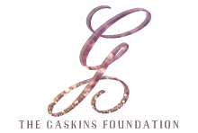
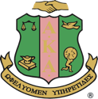

Dr. Whitney Gaskins is an assistant professor in the University of Cincinnati (UC) College of Engineering and Applied Science, the only African-American female faculty member now teaching at the university. She is also the director of research for Hughes STEM High School — an institution located adjacent to the campus — through a partnership launched by UC’s president during the White House College Opportunity Day of Action, in 2014. Dr. Gaskins earned her Bachelor of Science degree in biomedical engineering, M.B.A. in quantitative analysis and Ph.D. in biomedical engineering/engineering education at the University of Cincinnati. Her dissertation, “Changing the Learning Environment in the College of Engineering and Applied Science: The impact of Educational Training on Future Faculty and Student-Centered Pedagogy on Undergraduate Students,” was the first of its kind at the university.
Dr. Gaskins is a longtime member of the National Society of Black Engineers and has served the Society as a national officer and in other leadership positions. A mentor, advisor and community activist, she is dedicated to motivation of youth and to philanthropic endeavors. In 2009, she founded The Gaskins Foundation, a nonprofit organization whose mission is to educate and empower the African-American community. In efforts to continue her personal mission and the mission of her newly founded organization, Gaskins became Miss Black Ohio in 2009.
|  |  |